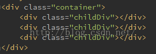
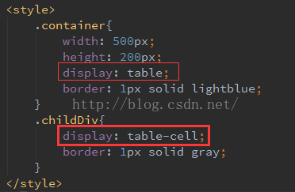

原文出处:本文由博客园博主子钦加油提供。
原文连接:https://www.cnblogs.com/zmdComeOn/p/11061323.html
原文连接:https://www.cnblogs.com/zmdComeOn/p/11061323.html
css等比例分割父级容器（完美三等分）
父级容器的宽度一定，要实现子元素等比例完美均分父级宽度，实现方式有哪些？
html部分代码：

方法一： 浮动布局+百分比
（将子元素依次左浮动，根据子元素的个数，设定每个子元素的宽度百分比）

方法二：行内元素（inline-block）+百分比
方法三： 父元素 display:table + 子元素 display:table-cell

方法四： css3 display:flex；（flex布局）
方法五：栅格系统（bootstrap）
给子元素添加class属性 class=“col-md-3”
以上五种方法都可以实现父元素容器的三等分均分，但是前两种根据百分比的方法并不能实现完美的三等分，因为百分比是一个不准确的估算值，同时如果子元素有边框的情况下，很难均分。
后三种方法优先使用